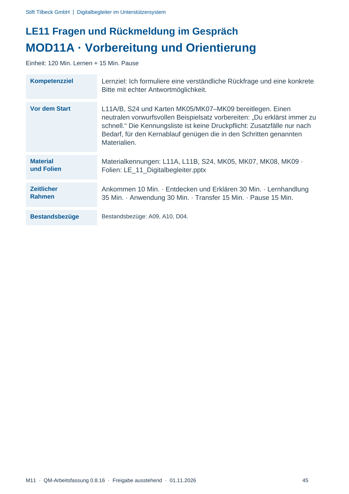
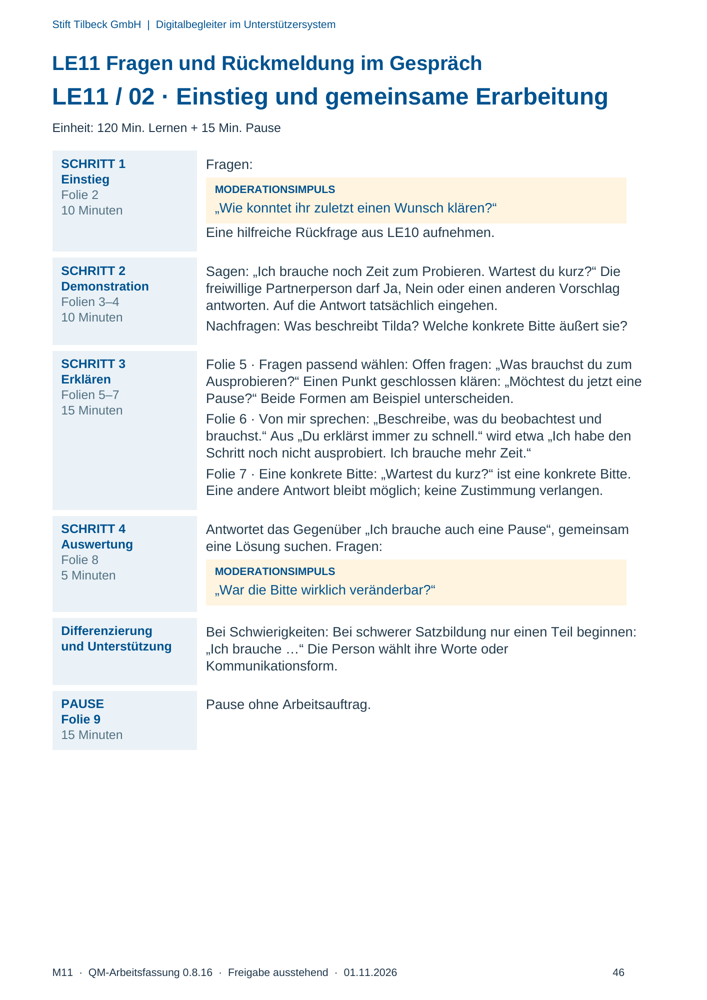
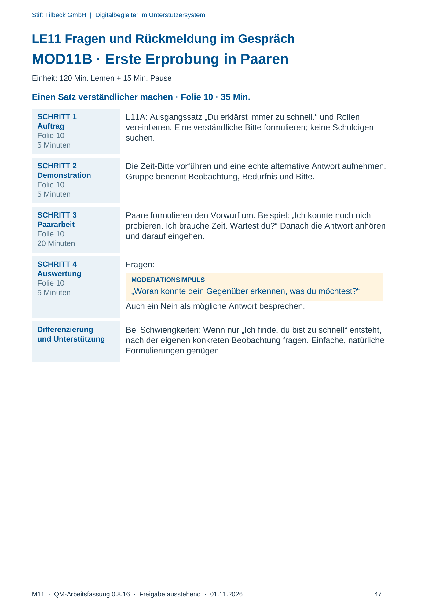
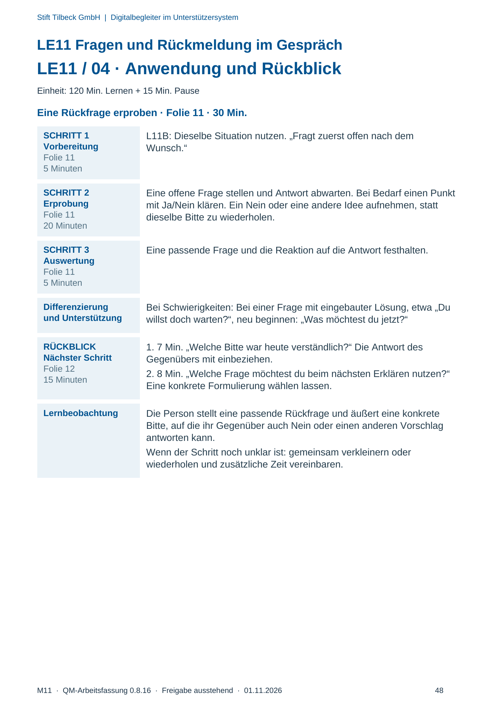

M11 · Originalseite 45, 46, 47, 48
Durchführungshilfe
Gezielte Original-Druckauswahl.
Fragen und Ankreuzfelder werden auf dem Ausdruck bearbeitet. Die Lesefassung speichert keine Antworten.
Lesefassung · Seite 45
Stift Tilbeck GmbH | Digitalbegleiter im Unterstützersystem
LE11 Fragen und Rückmeldung im Gespräch
MOD11A · Vorbereitung und Orientierung
Einheit: 120 Min. Lernen + 15 Min. Pause
Kompetenzziel Lernziel: Ich formuliere eine verständliche Rückfrage und eine konkrete
Bitte mit echter Antwortmöglichkeit.
Vor dem Start L11A/B, S24 und Karten MK05/MK07–MK09 bereitlegen. Einen
neutralen vorwurfsvollen Beispielsatz vorbereiten: „Du erklärst immer zu
schnell.“ Die Kennungsliste ist keine Druckpflicht: Zusatzfälle nur nach
Bedarf, für den Kernablauf genügen die in den Schritten genannten
Materialien.
Material
und Folien
Materialkennungen: L11A, L11B, S24, MK05, MK07, MK08, MK09 ·
Folien: LE_11_Digitalbegleiter.pptx
Zeitlicher
Rahmen
Ankommen 10 Min. · Entdecken und Erklären 30 Min. · Lernhandlung
35 Min. · Anwendung 30 Min. · Transfer 15 Min. · Pause 15 Min.
Bestandsbezüge Bestandsbezüge: A09, A10, D04.
Originalseite ansehen

Lesefassung · Seite 46
Stift Tilbeck GmbH | Digitalbegleiter im Unterstützersystem
LE11 Fragen und Rückmeldung im Gespräch
LE11 / 02 · Einstieg und gemeinsame Erarbeitung
Einheit: 120 Min. Lernen + 15 Min. Pause
SCHRITT 1
Einstieg
Folie 2
10 Minuten
Fragen:
MODERATIONSIMPULS
„Wie konntet ihr zuletzt einen Wunsch klären?“
Eine hilfreiche Rückfrage aus LE10 aufnehmen.
SCHRITT 2
Demonstration
Folien 3–4
10 Minuten
Sagen: „Ich brauche noch Zeit zum Probieren. Wartest du kurz?“ Die
freiwillige Partnerperson darf Ja, Nein oder einen anderen Vorschlag
antworten. Auf die Antwort tatsächlich eingehen.
Nachfragen: Was beschreibt Tilda? Welche konkrete Bitte äußert sie?
SCHRITT 3
Erklären
Folien 5–7
15 Minuten
Folie 5 · Fragen passend wählen: Offen fragen: „Was brauchst du zum
Ausprobieren?“ Einen Punkt geschlossen klären: „Möchtest du jetzt eine
Pause?“ Beide Formen am Beispiel unterscheiden.
Folie 6 · Von mir sprechen: „Beschreibe, was du beobachtest und
brauchst.“ Aus „Du erklärst immer zu schnell.“ wird etwa „Ich habe den
Schritt noch nicht ausprobiert. Ich brauche mehr Zeit.“
Folie 7 · Eine konkrete Bitte: „Wartest du kurz?“ ist eine konkrete Bitte.
Eine andere Antwort bleibt möglich; keine Zustimmung verlangen.
SCHRITT 4
Auswertung
Folie 8
5 Minuten
Antwortet das Gegenüber „Ich brauche auch eine Pause“, gemeinsam
eine Lösung suchen. Fragen:
MODERATIONSIMPULS
„War die Bitte wirklich veränderbar?“
Differenzierung
und Unterstützung
Bei Schwierigkeiten: Bei schwerer Satzbildung nur einen Teil beginnen:
„Ich brauche …“ Die Person wählt ihre Worte oder
Kommunikationsform.
PAUSE
Folie 9
15 Minuten
Pause ohne Arbeitsauftrag.
Originalseite ansehen

Lesefassung · Seite 47
Stift Tilbeck GmbH | Digitalbegleiter im Unterstützersystem
LE11 Fragen und Rückmeldung im Gespräch
MOD11B · Erste Erprobung in Paaren
Einheit: 120 Min. Lernen + 15 Min. Pause
Einen Satz verständlicher machen · Folie 10 · 35 Min.
SCHRITT 1
Auftrag
Folie 10
5 Minuten
L11A: Ausgangssatz „Du erklärst immer zu schnell.“ und Rollen
vereinbaren. Eine verständliche Bitte formulieren; keine Schuldigen
suchen.
SCHRITT 2
Demonstration
Folie 10
5 Minuten
Die Zeit-Bitte vorführen und eine echte alternative Antwort aufnehmen.
Gruppe benennt Beobachtung, Bedürfnis und Bitte.
SCHRITT 3
Paararbeit
Folie 10
20 Minuten
Paare formulieren den Vorwurf um. Beispiel: „Ich konnte noch nicht
probieren. Ich brauche Zeit. Wartest du?“ Danach die Antwort anhören
und darauf eingehen.
SCHRITT 4
Auswertung
Folie 10
5 Minuten
Fragen:
MODERATIONSIMPULS
„Woran konnte dein Gegenüber erkennen, was du möchtest?“
Auch ein Nein als mögliche Antwort besprechen.
Differenzierung
und Unterstützung
Bei Schwierigkeiten: Wenn nur „Ich finde, du bist zu schnell“ entsteht,
nach der eigenen konkreten Beobachtung fragen. Einfache, natürliche
Formulierungen genügen.
Originalseite ansehen

Lesefassung · Seite 48
Stift Tilbeck GmbH | Digitalbegleiter im Unterstützersystem
LE11 Fragen und Rückmeldung im Gespräch
LE11 / 04 · Anwendung und Rückblick
Einheit: 120 Min. Lernen + 15 Min. Pause
Eine Rückfrage erproben · Folie 11 · 30 Min.
SCHRITT 1
Vorbereitung
Folie 11
5 Minuten
L11B: Dieselbe Situation nutzen. „Fragt zuerst offen nach dem
Wunsch.“
SCHRITT 2
Erprobung
Folie 11
20 Minuten
Eine offene Frage stellen und Antwort abwarten. Bei Bedarf einen Punkt
mit Ja/Nein klären. Ein Nein oder eine andere Idee aufnehmen, statt
dieselbe Bitte zu wiederholen.
SCHRITT 3
Auswertung
Folie 11
5 Minuten
Eine passende Frage und die Reaktion auf die Antwort festhalten.
Differenzierung
und Unterstützung
Bei Schwierigkeiten: Bei einer Frage mit eingebauter Lösung, etwa „Du
willst doch warten?“, neu beginnen: „Was möchtest du jetzt?“
RÜCKBLICK
Nächster Schritt
Folie 12
15 Minuten
1. 7 Min. „Welche Bitte war heute verständlich?“ Die Antwort des
Gegenübers mit einbeziehen.
2. 8 Min. „Welche Frage möchtest du beim nächsten Erklären nutzen?“
Eine konkrete Formulierung wählen lassen.
Lernbeobachtung Die Person stellt eine passende Rückfrage und äußert eine konkrete
Bitte, auf die ihr Gegenüber auch Nein oder einen anderen Vorschlag
antworten kann.
Wenn der Schritt noch unklar ist: gemeinsam verkleinern oder
wiederholen und zusätzliche Zeit vereinbaren.
Originalseite ansehen
